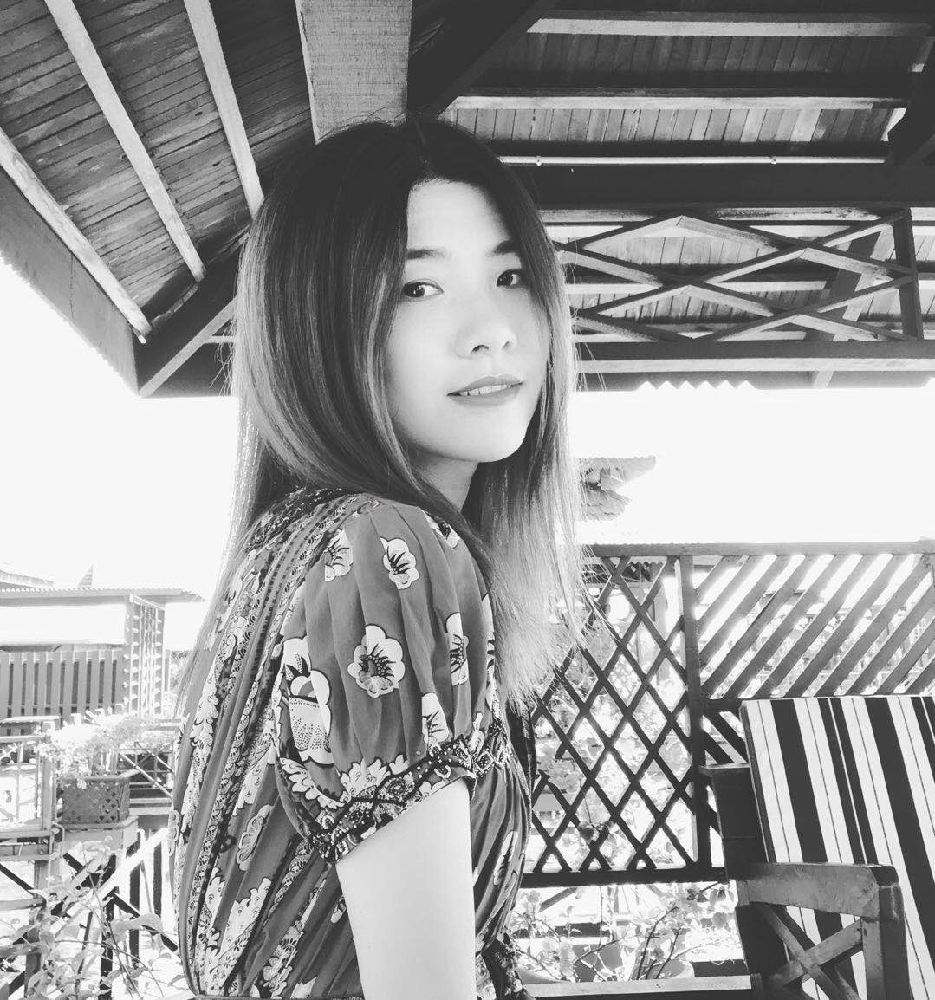

自己紹介

私は鄧真と申します。
中国人です。私と母さんは動物が大好きです、実家のペートは多いです。
犬が２匹、玄鳳インコ夫婦と子供４羽、ヨウム1羽、ハッカチョウ2羽（庭に見つけた）,大雨後うちの犬見つけたの幼い雀と猫。。。(Ｔ▽Ｔ)10匹。
（猫は全部母救助の野良猫です。）
と魚１匹があります。
母は今仕事がないので、毎日小動物世話のことは非常に忙しいです。
私今留学中ですが、母さんと電話するたびに、『もう小動物を拾わないよ！』と母さんに伝えます。